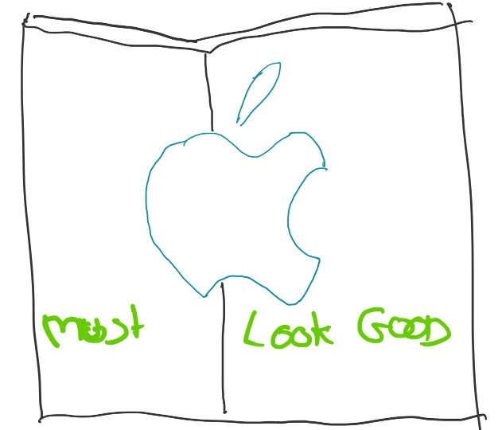
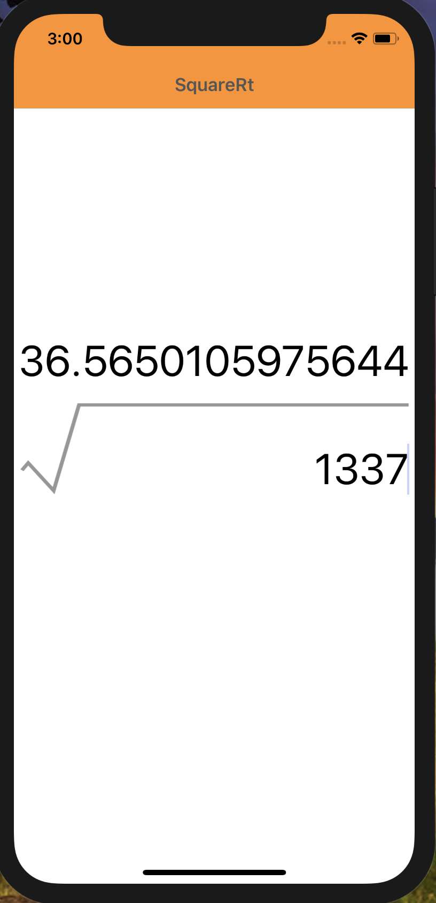
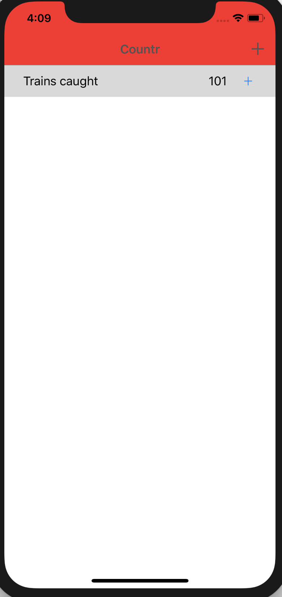

Xamarin in Action — Chapters 11 and 12
Time to take a bite from the other mobile APPle now, excuse the pun! So in the last post we created the views for both example apps on Android. This time we will be doing the same but for iOS.

Chapter 11 — BUILDING SIMPLE IOS VIEWS
Android and iOS SDK’s are different but the basic concept of a screen or view is the same. You have a layout and classes to access those components. In iOS, instead of an Activity for the view, you have a UIViewController. The UI for both apps will look the same on iOS as Android, as expected but how you create those screens will be different.
Section 1 talks about building the UI’s, starting with SquareRt. Subsection 1 touches on Apple Human Interface Guidelines which is their equivalent to Material Design. Apple have put a lot of time and research into these. Create an app that doesn’t follow these guidelines and your app will most likely get rejected if you request to publish to the App Store.
It follows the three basic principles:
-
Deference — The UI should enhance the content, not distract from it. A great example Jim gives is a weather app. A background image can be used to convey the current weather but shouldn’t distract from the data such as location for that weather and details like temperature and actual current weather.
-
Clarity — It should be clear and simple. There should not be a lot of ‘noise’ on the page and a minimalist feel. Take advantage of space between components and don’t shove too much data on the page in one go.
-
Depth — This refers to a layered approach to the UI where the most important content takes priority. Translucency can be used to make this depth more prominent. Another technique is to use zooming to control the level of granularity. Jim uses the example of the iCal app where zooming can switch between Day/Month/Year views.
The main thing is to read the guidelines thoroughly for the ideas you want to implement and keep it consistent with what users are used to from iOS apps in terms of look and feel. There are common patterns.
Subsection 2 moves onto Storyboards which is Apple’s XML layout files for defining the layout of controls for one or more screens in one place. This means you can literally write out the story of the interactions with each screen defined alongside an associated controller and a way of navigating between these pages, called segues. Of course we will be sticking to view-model first navigation that we set up in a previous chapter in the book.
Unlike in Android where you can pick between the Designer and the Source view for this XML, for iOS this source is not human-readable so the standard is to used the drag-and-drop designer. This is a very powerful tool. The last bit on Subsection 2 introduces how Apple does all the handling for different screen size and orientations.
Subsection 3 is all about controls. Unlike for Android, there is no Relative Layout for positioning things in iOS. There is however constraints which is something we looked at in Part 1 of the book.
Subsection 4 talks about screen resolutions. In the beginning there was only one iPhone with one resolution. Obviously this has changed now with different resolutions, retina displays and iPads. Jim covers all this with an informal little history lesson.
Subsection 5 put a smile on my face. It discusses auto layout and constraints using the example of an Orchestra and how it is always laid out in the same way on stage. As a former music scholar I love a good musical reference! There is even a diagram of the orchestral layout regardless of size or venue, love it. Auto layout and constraints is similar to this. You specify a set of rules that govern how it will be laid out regardless of size or shape.
Subsection 6 discusses image resources and asset catalogs. I must admit, I usually try and avoid this where possible as I get in a muddle. If I have to use Images, I will use an amazing plugin for Visual Studio for Mac called MFractor which has a built-in image import wizard to take away the hard work. But it is still important to understand about how Apple handles image sizes and where to add them.
Subsection 7 finishes off Section 1 with a summary of what was covered.
Section 2 is about building up the storyboard and it’s related components. Each subsection builds up the layers. Subsection 1 starts with the view controller for your SquareRt app. This is not the actual view controller class but instead a holder for your views. You cannot just add a button or a label to a storyboard.
Subsection 2 moves on to adding the image of the square root symbol like from the Android UI. This image will be the centre of the screen and act as as reference point for the other components. It covers adding the relevant Images to an asset catalog and displaying it on the screen including configuring constraints.
Next up is the text field for entering a value to be ‘square rooted’ and this is covered in Subsection 3. After that is Subsection 4 which involves adding the result label for displaying the answer of square rooting the value from the text field.
Subsection 6 moves onto something called size classes. This is how you can tweak what the UI looks like for different device sizes or orientations. You will make some changes to reflect orientation changes on certain devices.
Section 3 is where you then start work on the view for your SquareRt app. Subsection 1 answers the question “what is a view controller?”
Subsection 2 discusses view lifecycle and methods for handling that such as ViewDidLoad. This is similar to the lifecycle you learned about in Android in the last chapters.
Subsection 3 has you creating the view controller required for the app. This view controller will again require a couple of bits of configuration for MVVMCross due to the view-model first approach.
Subsection 4 wires up the view controller to the view. The first step is to tell the view controller in the storyboard which backing view controller class to use. The issue with using storyboards as well is that unlike you did on Android, you can’t bind custom properties on the controls. Instead you set their names in the Widget tab and this will create a property inside the view controller class. This is actually the designer.cs file though rather than the view controller itself. This is one of the uses of the designer file.
Subsection 5 is for binding the view controller. As Jim says, once you load your view from the storyboard, you need to bind the controls to your view model. You do this in the ViewDidLoad method. When this method is called, all properties have been set so you can safely go ahead and bind your controls knowing they have been initialised. Jim walks you through doing this.
Section 4 is the usual helpful summary of the chapter and then boom, you have SquareRt complete on both platforms!

SquareRt iOS at the end of Chapter 11 (with some nice colours)
Chapter 12 — BUILDING MORE ADVANCED IOS VIEWS
Like with Android, the 2nd chapter for the iOS side of things is to create the more complex views for Countr. This will involve a table view for listing counters, navigation bar buttons, setting app icons, launch screens and the appearance API. All very familiar as it is the same stuff covered for Android in Chapter 10.
Section 1, as with SquareRt in Chapter 11 Section 1, discusses what UI views and components will be required in this app. For this you will need two screens. A master view showing a list of all counters and a detail view for adding a new counter.
Subsection 1 walks through creating the master view. This will require a table view and table view controller. Like with SquareRt, you will need to to extend from a special MVVMCross class, this time called MvxTableViewController. You also need to set the backing view controller for the view in the storyboard and set an ID.
You will also need to set up a table source. This is because the table needs to know where to get the data from and what to display. MVVMCross has you covered again and you can write a class that implements this to save some of the effort. After this you can configure each table cell. This will be a one to one mapping to a counter with each row being a counter.
There is a lot covered in this section as tables require quite a bit of setup and understanding so it is worth taking time to read and understand this.
Subsection 2 talks about navigation bars and buttons. This is because when you have multiple screens in your app, you need a way for the user to know what screen they are on and how to get back to the previous page. MVVMCross actually uses a Navigation View Controller by default behind the scenes so you don’t need to set this explicitly. You will however still add a custom Add button to the top right for adding a new counter. Well triggering the navigation to that page.
You will create the UI for the detail view in Subsection 3. It is actually a very simple screen with just a text field for entering the new counter name and a done button to save it. The pattern for creating this is the same as the other views. Create the new view files, drag the controls you want onto the storyboard, set the ID and set the property names. Then go into the view file, extend the MvxViewController class and set the attribute to tell it to load the UI from the storyboard.
Woop you are done! Now run the app and you will have a shiny working iOS Countr app :D. Like with the Android equivalent part, Jim does a nice explanation of what is happening in the app from launch to interaction.
Section 2 is about app icons and launch screens. Like with Android, by default the app icon is the MVVMCross logo, which we will want to change.
Subsection 1 looks at app icons. TIL moment for me. iOS requires 20, yes 20 different icons for the different uses and sizes. Thankfully you can use the same sources to generate these Images as you did the Android versions in Chapter 10.
Subsection 2 talks launch screens. Like with Android, there will be a screen displayed briefly as the app loads and as this is the first view the user sees, you want it to be something sensible. You also learn about application lifecycle and the AppDelegate.cs class that is created by default.
There is already a launchscreen.xib file so you can edit this to customise your launch screen. Ideally you want it to be the same as the Android version with the same background and image.

The Countr app on iOS at the end of Chapter 12 — aka complete!!
WE ARE DONE!!! Two cross-platform native apps with lots of features and a whole heap of new knowledge!
I have only gone in to brief detail about each section in these posts but I assure you it all contains a lot of amazing information and it is well worth buying the book!
Now of course Part 3 discusses how to make your apps production ready for the app stores and other important steps in that process like testing. But for now we have working apps we can run locally. Congratulations!